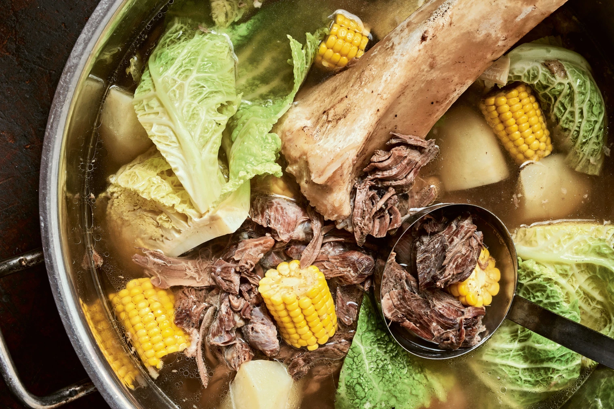

Bulalo (Bone Marrow Soup)

Note: This recipe and its description are borrowed from the cookbook: I Am A Filipino by Nicole Ponseca and Miguel Trinidad
Bulalo is a rustic soup that uses a long simmering of bone marrow bones with corn, potatoes and cabbage to create a delicate, yet complex flavor profile. Bulalo is a specialty dish in a region of the Phillippines that is best known for their beef cattle.
Ingredients
5 pounds beef shanks, preferably grass-fed
Kosher salt and freshly ground black pepper
1/4 cup whole black peppercorns
1/2 cup whole garlic cloves (about 10) smashed with the side of a knife
4 bay leaves
2 medium white onions, thinly sliced
1 bunch scallions, thinly sliced
2 cups coarsly chopped peeled potatoes
1/4 pound napa cabbage, thickly sliced
1 ear fresh corn, cut cross wise into 1-inch-long pieces
Fish sauce
- In a large stockpot, bring 1 gallon water to a boil
- Season the beef shanks liberally with salt and pepper. Add them to the boiling water and let the water come back to a boil. Reduce the heat to medium-low so the water simmers. Skim off any impurities from the top.
- Add the peppercorns, garlic, bay leaves, and onions and cook the beef shanks for 2 1/3 to 3 1/2 hours, until the marrow is tender. Keep an eye on the pot. Add water as needed to keep the ingredients just covered.
- Add the scallions, potatoes, cabbage, and corn and cook for 10 minutes more, or until the potatoes are cooked through. Taste and season with fish sauce.
- Serve in deep bowls, making sure each serving has some beef, onion, potato, cabbage, and corn.
Back to Homepage